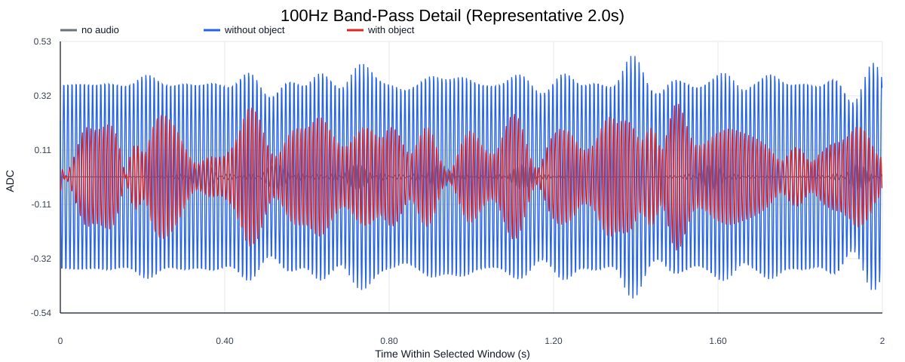
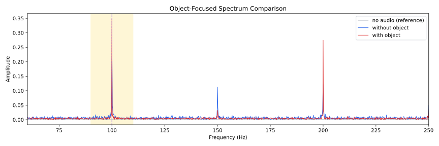
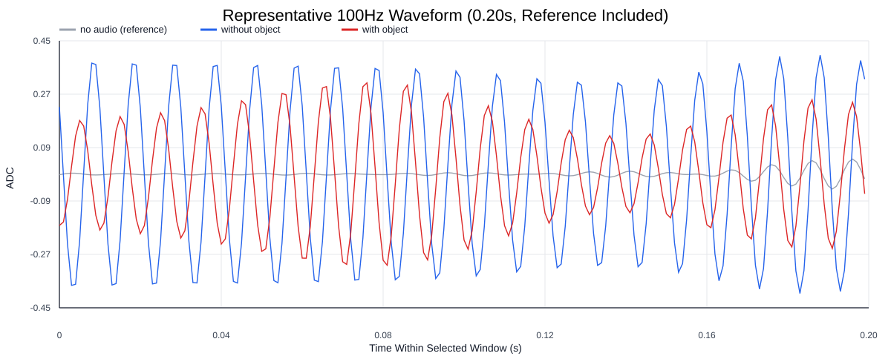
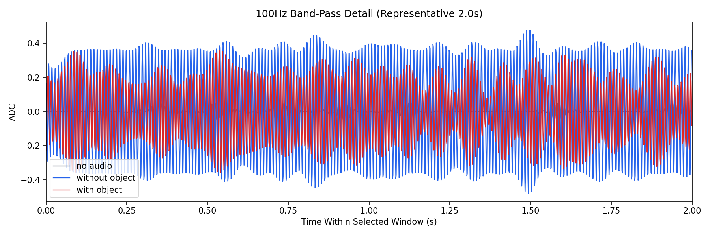
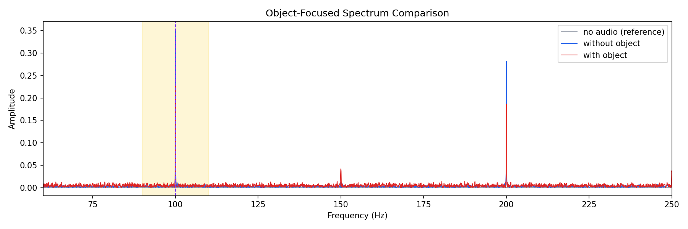
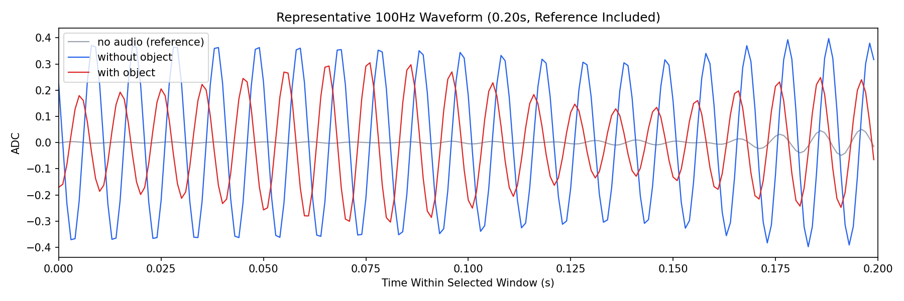

Background: F:\项目类文件夹\异物检测4.10\Data_Dual\frequency_sweep\0100Hz\repeat_01\raw\no_audio.csv
Without object: F:\项目类文件夹\异物检测4.10\Data_Dual\frequency_sweep\0100Hz\repeat_01\raw\without_object.csv
With object: F:\项目类文件夹\异物检测4.10\Data_Dual\frequency_sweep\0100Hz\repeat_01\raw\with_object.csv
| Metric | 无音频 | 100Hz无异物 | 100Hz有异物 | 无异物/无音频 | 有异物/无异物 | 有异物/无音频 |
|---|---|---|---|---|---|---|
| centered_rms | 0.064635 | 0.412769 | 0.408353 | 6.3862 | 0.9893 | 6.3178 |
| raw_target_amp | 0.001311 | 0.352789 | 0.226966 | 269.0350 | 0.6433 | 173.0831 |
| filtered_rms | 0.014496 | 0.255194 | 0.169059 | 17.6041 | 0.6625 | 11.6622 |
| filtered_target_amp | 0.001311 | 0.352789 | 0.226966 | 269.0350 | 0.6433 | 173.0831 |
| filtered_energy_ratio | 0.050301 | 0.382231 | 0.171397 | 7.5988 | 0.4484 | 3.4074 |
| window_filtered_target_amp_mean | 0.007365 | 0.355599 | 0.215633 | 48.2848 | 0.6064 | 29.2796 |
| window_filtered_target_amp_std | 0.008392 | 0.030007 | 0.061252 | 3.5756 | 2.0412 | 7.2986 |





